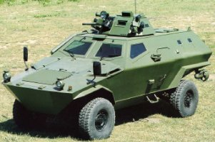

|
*Bu rapor, Otomotiv Sanayiinde Ýþbirlikleri II:"Endüstriyel Tasarým
ve Ürün Geliþtirme"
konferansýnda yapýlan sunumdan derlenmiþtir.
Kudret
Önen
Genel Müdür
Otokar Otobüs Karoseri Sanayi A.Þ.
22 Ekim 2004 Sabancý Center, Ýstanbul
Geçtiðimiz
yýl 40. yýlýný kutlayan Otokar, Türk otomotiv sanayinin en
eski þirketlerinden biridir. "Magirus-Deutz" lisansý
altýnda otobüs üretimine baþlayan, Türkiye'de belli bir döneme
ismini vurmuþ 'Apollo', 'Magirus' otobüsleri ile tanýnan Otokar,
bir bankanýn satýþýyla Koç Grubu'na geçmiþ ve 1970'den itibaren
de tamamen kendi dizayn ettiði araçlar üzerine konsantre olarak
imalatýný sürdürmüþtür.
Bugün
Ýstanbul'da nerdeyse her gün 1 ila 2 milyon civarýnda insan
taþýyan minibüsleri Otokar üretmektedir. 1984'lerde þirket
büyüme stratejisi olarak baþka bir alan tanýmlamýþ ve 1987'de
askeri araçlar imalatýna baþlamýþtýr.
1990'larýn
baþýnda hafif zýrhlý araçlar imalatýna baþlamýþ; 2002'de de
"Ýstanbul-Fruehauf' ile "Otokar" birleþmiþtir.
Böylelikle, Otokar ürün gamýna semi-treyler, treyler ürünleri
eklenmiþtir. Yine 2002'de, otobüsçülük tekrar canlandýrýlarak,
"Sultan" midibüsler üretilmeye baþlanmýþtýr. Neticede
Otokar geniþ bir mamül gamýna sahip olmuþtur.
|
|
|
|
|
1963,
lisans altý otobüs imalatý (Deutz)
|
1970,
kendi dizayný minibüs
|
1970,
kendi dizayný küçük otobüs
|
Otokar'ýn
geliþme stratejisi kýsaca analiz edilirse; faaliyete baþladýðý
1963 yýlýnda ürettiði ancak sonrasýnda birtakým nedenlerle
býrakmak zorunda kaldýðý ilk otobüslerin; sonrasýnda minibüs
ve küçük otobüslerin lisans altýnda deðil; kendi dizayný olarak
üretildiði görülmektedir.
1970'li
yýllardan bu yana 80S4.5, 85ES gibi ve son olarak da saðda
görülen M2000 modeli ile pazarlanan minibüsümüz neredeyse
25 yýldýr Otokar tarafýndan dizayn ve imal edilmektedir.
M2000
"dolmuþ" taþýmacýlýk alanýnýn en önemli araçlarýndan
biri olmuþtur.
|
|
|
|
1984,
kendi dizayný otobüs (131-11B)
|
2002,
kendi dizayný küçük otobüs
|
1984'lü
yýllarda tekrar otobüsçülüðe dönerek, "131-11B"
adý verilen tamamen Otokar lisansýyla otobüs imalatý baþlamýþtýr.
Askeri iþlerdeki büyüme nedeniyle otobüsçülüðe ara verilmiþ;
askeri iþlere aðýrlýk verilmiþtir. Otobüsçülük kýsa bir süre
býrakýlmýþ, ancak 2002'de tekrar Otokar dizayný küçük otobüsler
üretilmeye baþlanmýþtýr.
|
|
|
|
1987,
Land Rover lisansý ile taktik araçlar
|
(40
adetin üzerinde kendi dizayný özel araç)
|
Askeri
taktik araçlarda, 1987 yýlýnda 'Land Rover'la lisans altýnda
baþlanýlan imalat, bugün hala devam etmektedir. Bugün Türkiye'de
20 bin adet Land Rover Defender üretilip satýlmasýný saðlayan
unsur ise, 'Land Rover'ýn kendisinin yanýnda Otokar'ýn ona
eklediði 40'ýn üstünde deðiþik modeldir. Bugün ordumuz 3.5
tondan 4 tona kadar, istediði bir Otokar 'Land Rover Defender'
aracýný bulabilmektedir. Bu da tamamen Otokar'ýn özgün tasarýmlarý
ile ortaya çýkmýþtýr.
|
|
|
|
1990,
Land Rover þasi üstüne zýhrlý araçlar
|
1993,
monokok gövdeli zýhrlý araçlar
|
1990
yýlýnda Land Rover ile yarý lisans altýnda baþlayan zýrhlý
araçlarý; hemen arkasýndan þasisiz, tamamen Otokar dizayný
bir zýrhlý araç takip etmiþtir. Onun ardýndan 6.5 tonluk daha
büyük, yine þasisi olmayan bir zýrhlý araç üretilmiþtir. Bugünlerde
Otokar 8x8, 26 tonluk büyük bir zýrhlý araç projesi üzerinde
çalýþmaktadýr. Burada önemli olan nokta; lisans altýnda baþlayan
bir çalýþmayla, mühendisliðin ve özgün tasarýmlarýn nereye
geldiðidir.
|

|
|
|
1997,
monokok gövdeli zýhrlý araçlar
|
2001,
8x8 25 tonluk zýhrlý araç proje aþamasýnda
|
|